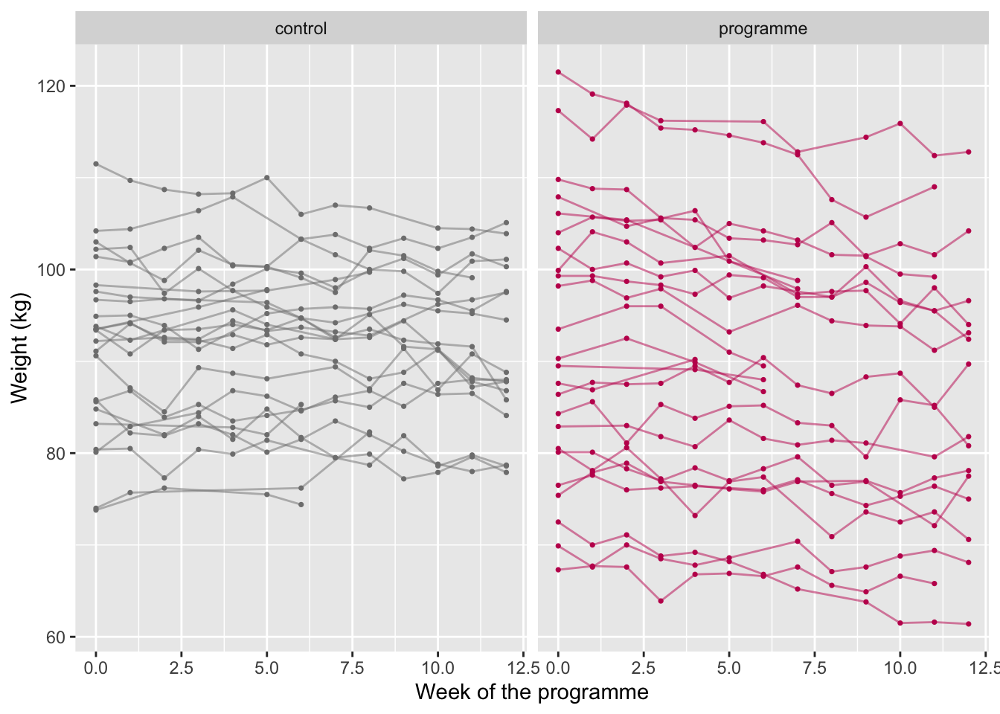
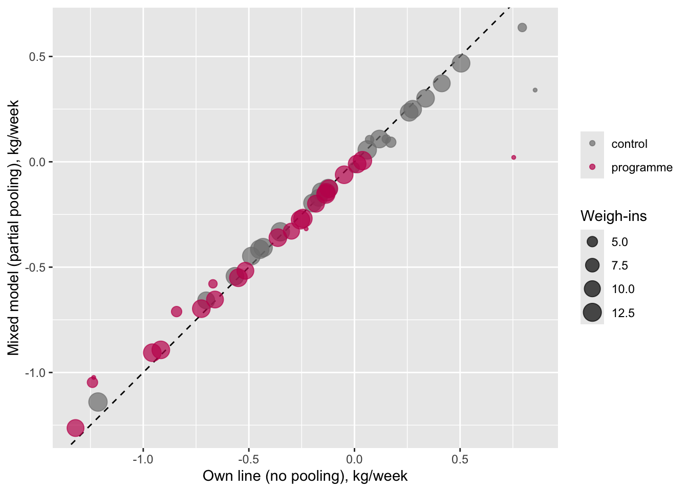
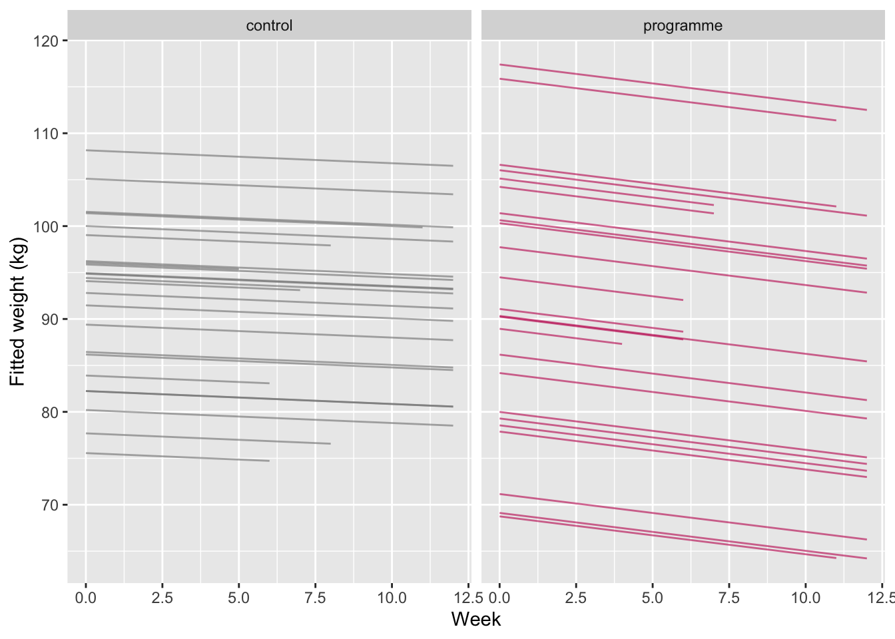
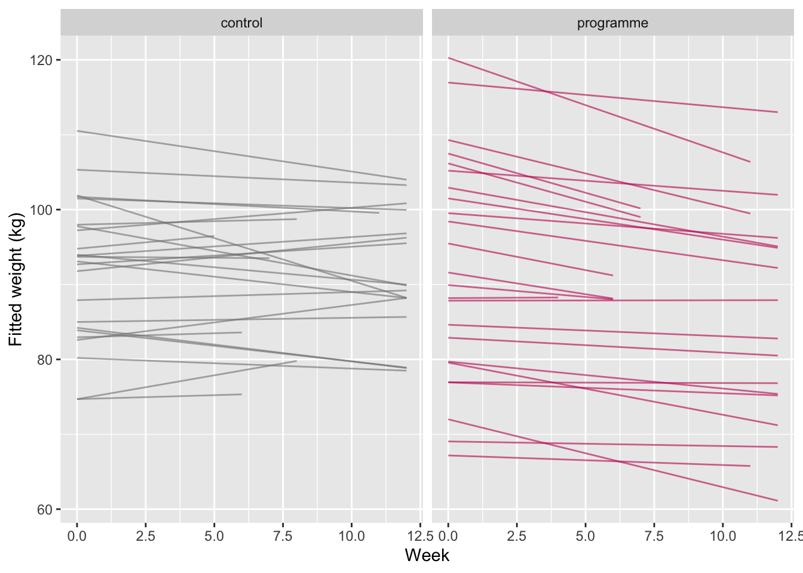
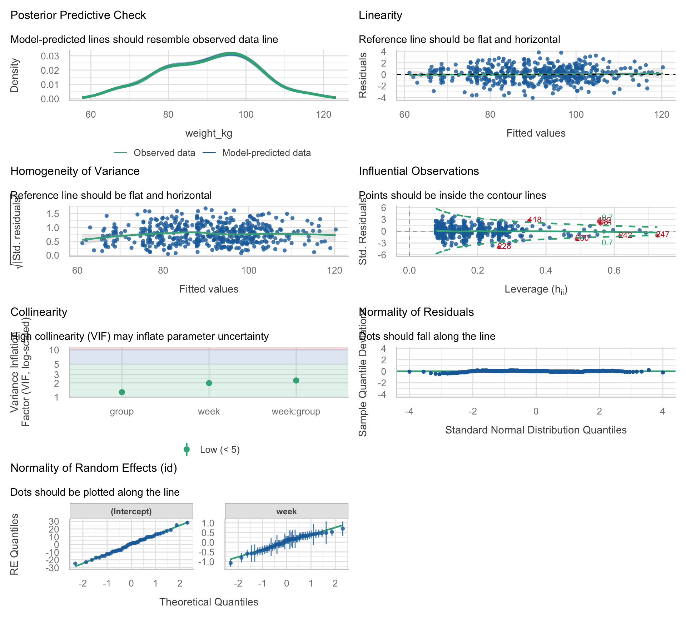

renv::install(c("lme4", "lmerTest", "performance", "see"))
renv::snapshot()Seminar 5 — Linear Mixed-Effects Models
PSY40760 Advanced Data Analysis and Statistics in R
Worksheet 5
Welcome
This week the same 48 Trial A participants are weighed every week for 12 weeks. Repeated measurements break the independence assumption of lm(), and mixed models are the fix. The walkthrough follows the theory slides in the same order, one small step at a time: run each chunk, read the output, and answer the short Check question before moving on. The exercises repeat each step on a classic dataset, sleepstudy, with most of the code already written for you.
Question: does the programme change the rate of weight loss (kg per week)? In model terms, that is the
week * groupinteraction.
Session at a glance
| Date | Wednesday 18 November 2026 |
| Room | QUI-115 |
| Time | 170 min |
| Staff | Dr Ondrej Zika, Cameron McCabe |
| Theory | Non-independence; complete, no and partial pooling; fixed vs random effects; building the model: random intercepts, random slopes, the full model; reading and reporting the output; model comparison; performance |
| Practical | The same steps in R: a joint walkthrough on the weekly weigh-ins, then guided exercises on sleepstudy |
Before you arrive
1. Environment
Get this week’s files: download them, do not clone the repository. Inside your existing course folder psy40760-practicals-2026, create a folder called seminar-05-mixed-models (exact name). From GitHub, download seminar-05-worksheet.qmd and the folder seminar-05-worksheet_files (with all its files) into it, keeping the same structure:
psy40760-practicals-2026/
├── .root-practicals
├── renv.lock
├── ...
└── seminar-05-mixed-models/
├── seminar-05-worksheet.qmd
└── seminar-05-worksheet_files/Do not download or clone the whole repository again: that would overwrite your earlier worksheets and your renv set-up. (Only if you cloned the repository with git in the first week: run git pull instead.)
Then use the course folder as in previous weeks (here + renv, see the environment set-up guide). This week adds the mixed-model packages:
lme4 fits the models, lmerTest adds p-values, performance (part of easystats) checks and compares them, and see draws the performance plots.
2. Reading
| Theory | Baker (2022), Research Methods Using R, Ch. 7: Mixed-effects models |
| Brown, V. A. (2021). An introduction to linear mixed-effects modeling in R. AMPPS, 4(1). | |
| Bates, Mächler, Bolker & Walker (2015). Fitting linear mixed-effects models using lme4. Journal of Statistical Software, 67(1). | |
| Winter, B. (2013). Linear models and linear mixed effects models in R (tutorial). |
Part 1: Joint walkthrough
Every subsection matches a group of slides from the theory block (in square brackets). Notation is the same as on the slides: β for fixed effects, u for each person’s deviation, e for the residual, and * for “multiplied by”.
2.0 Load the packages and the data
library(here)
here::i_am(".root-practicals")
library(renv)
renv::load(here::here())- The project is out-of-sync -- use `renv::status()` for details.library(dplyr)
library(ggplot2)
library(lme4)
library(lmerTest) # loads after lme4, so lmer() now also reports df and p-values
library(performance)
weekly <- read.csv(here::here("seminar-05-mixed-models", "seminar-05-worksheet_files", "trial_a_weekly.csv"))
weekly <- weekly %>% mutate(group = factor(group, levels = c("control", "programme")))
weekly %>% glimpse()Rows: 481
Columns: 6
$ id <chr> "P01", "P01", "P01", "P01", "P01", "P01", "P01", "P01", "P01…
$ group <fct> control, control, control, control, control, control, contro…
$ sex <chr> "female", "female", "female", "female", "female", "female", …
$ age <int> 43, 43, 43, 43, 43, 43, 43, 43, 43, 43, 43, 33, 33, 33, 33, …
$ week <int> 0, 1, 3, 4, 6, 7, 8, 9, 10, 11, 12, 0, 1, 2, 3, 4, 5, 6, 7, …
$ weight_kg <dbl> 104.2, 104.4, 106.4, 107.9, 103.3, 103.8, 102.3, 103.4, 102.…2.1 The data: one row per weigh-in [slides 3–4]
The data are in long format: one row per person per week. Look at the first person:
weekly %>% filter(id == "P01") id group sex age week weight_kg
1 P01 control female 43 0 104.2
2 P01 control female 43 1 104.4
3 P01 control female 43 3 106.4
4 P01 control female 43 4 107.9
5 P01 control female 43 6 103.3
6 P01 control female 43 7 103.8
7 P01 control female 43 8 102.3
8 P01 control female 43 9 103.4
9 P01 control female 43 10 102.3
10 P01 control female 43 11 103.5
11 P01 control female 43 12 105.1Count how many weigh-ins each person has:
weighins <- weekly %>% count(id, group)
head(weighins) id group n
1 P01 control 11
2 P02 control 13
3 P03 control 12
4 P04 control 13
5 P05 control 13
6 P06 control 12weighins %>%
summarise(people = n(), rows = sum(n), fewest = min(n), most = max(n)) people rows fewest most
1 48 481 3 13Check: how many rows does the data set have, and how many people? Why are these two numbers different?
Plot every person’s trajectory (a “spaghetti plot”):
ggplot(weekly, aes(x = week, y = weight_kg, group = id, colour = group)) +
geom_line(alpha = 0.5) +
geom_point(size = 0.6) +
facet_wrap(~ group) +
scale_colour_manual(values = c(control = "grey50", programme = "#C2185B")) +
labs(x = "Week of the programme", y = "Weight (kg)") +
theme(legend.position = "none")
2.2 The effect is not the same in everyone [slide 5]
Fit a separate line for each person and look at their starting weights and rates. reframe() runs lm() within each person:
per_person <- weekly %>%
group_by(id, group) %>%
reframe(start = coef(lm(weight_kg ~ week))[1],
rate = coef(lm(weight_kg ~ week))[2],
n = n())
head(per_person)# A tibble: 6 × 5
id group start rate n
<chr> <fct> <dbl> <dbl> <int>
1 P01 control 105. -0.169 11
2 P02 control 101. -0.124 13
3 P03 control 82.4 0.505 12
4 P04 control 94.1 -0.351 13
5 P05 control 84.1 -0.448 13
6 P06 control 102. -0.199 12range(per_person$start) # starting weights[1] 67.10897 120.58632range(per_person$rate) # kg per week[1] -1.3205263 0.8552632Check: do people differ more in where they start or in how fast they lose weight? Does everyone lose weight?
2.3 Way 1: ignore who is who [slide 6]
Complete pooling: lm() on all 481 rows, as if every weigh-in came from a different person.
m_lm <- lm(weight_kg ~ week * group, data = weekly)
summary(m_lm)$coefficients Estimate Std. Error t value Pr(>|t|)
(Intercept) 92.45253085 1.4096403 65.5859035 7.953257e-241
week -0.06771114 0.2036293 -0.3325216 7.396415e-01
groupprogramme -0.95904411 1.9772111 -0.4850489 6.278643e-01
week:groupprogramme -0.45008898 0.2891054 -1.5568337 1.201732e-01The four coefficients:
(Intercept): β0, the control group’s average weight at week 0week: β1, the control group’s rate (kg per week)groupprogramme: β2, how much heavier the programme group was at week 0week:groupprogramme: β3, how much faster the programme group lost weight: our question
Note the 95% CI for β3; we will compare it with the other ways.
confint(m_lm)["week:groupprogramme", ] 2.5 % 97.5 %
-1.0181665 0.1179885 2.4 Way 2: one line per person, then a t-test [slide 7]
No pooling: summarise each person by their own rate (from 2.2), then compare the rates between the groups. Valid, but a rate from 3 weigh-ins counts as much as one from 13.
t.test(rate ~ group, data = per_person, var.equal = TRUE)
Two Sample t-test
data: rate by group
t = 2.9996, df = 46, p-value = 0.004353
alternative hypothesis: true difference in means between group control and group programme is not equal to 0
95 percent confidence interval:
0.1370307 0.6961044
sample estimates:
mean in group control mean in group programme
-0.03504766 -0.45161521 2.5 Way 3: partial pooling, the mixed model [slides 8–9]
A mixed model gives each person their own line, but treats the lines as coming from one common distribution. Here is the model; sections 2.7–2.9 build its formula step by step.
m_slope <- lmer(weight_kg ~ week * group + (1 + week | id), data = weekly)Shrinkage. coef() gives each person’s own intercept and slope from the mixed model. For programme participants we add the interaction, β3, to get their own rate:
pp <- coef(m_slope)$id
pp$id <- rownames(pp)
shrink <- per_person %>%
left_join(pp %>% select(id, week_mixed = week), by = "id") %>%
mutate(rate_mixed = ifelse(group == "programme",
week_mixed + fixef(m_slope)["week:groupprogramme"],
week_mixed))
shrink %>% arrange(n) %>% select(id, group, n, rate, rate_mixed) %>% head(6)# A tibble: 6 × 5
id group n rate rate_mixed
<chr> <fct> <int> <dbl> <dbl>
1 P24 control 3 0.855 0.340
2 P25 programme 3 -1.23 -1.02
3 P37 programme 3 -0.229 -0.318
4 P48 programme 3 0.754 0.0209
5 P10 control 4 0.151 0.108
6 P17 control 4 0.0714 0.105 Check: for the people with only 3 weigh-ins, is the mixed-model rate closer to the group average than their own rate?
ggplot(shrink, aes(x = rate, y = rate_mixed, size = n, colour = group)) +
geom_abline(linetype = 2) +
geom_point(alpha = 0.7) +
scale_colour_manual(values = c(control = "grey50", programme = "#C2185B")) +
labs(x = "Own line (no pooling), kg/week", y = "Mixed model (partial pooling), kg/week",
size = "Weigh-ins", colour = NULL)
Points on the dashed line did not move. Small points (few weigh-ins) move the most.
2.6 Fixed versus random effects [slides 10–11]
- Fixed effects answer the question: the average start, the average rate, and how they differ between groups (β0 to β3).
- Random effects describe where the data come from: people are a sample from a population, and each person deviates from the average (u0j for the start, u1j for the rate).
Check: in this study, which of id, week and group is the grouping factor for the random effects? Why is group not a random effect? (Hint: slide 11.)
2.7 Step 1: random intercepts [slide 12]
Each person gets their own start, β0 + u0j, but shares the group’s rate. In lme4 this is (1 | id):
m_int <- lmer(weight_kg ~ week * group + (1 | id), data = weekly)The model does not estimate 48 separate starts. It estimates one SD: how much starting weights vary between people.
VarCorr(m_int) # SD of the intercepts, and the residual SD Groups Name Std.Dev.
id (Intercept) 11.6890
Residual 2.0826 head(ranef(m_int)$id) # each person's u0j: their deviation from the average start (Intercept)
P01 13.0211821
P02 9.4666365
P03 -5.6296237
P04 0.7264397
P05 -9.8400669
P06 9.3145906Plot the fitted lines: different starts, but parallel within each group.
weekly$fit_int <- fitted(m_int)
ggplot(weekly, aes(x = week, y = fit_int, group = id, colour = group)) +
geom_line(alpha = 0.6) +
facet_wrap(~ group) +
scale_colour_manual(values = c(control = "grey50", programme = "#C2185B")) +
labs(x = "Week", y = "Fitted weight (kg)") +
theme(legend.position = "none")
Check: 2.2 showed that people also differ in their rate. Can this model capture that?
2.8 Step 2: random slopes [slides 13–14]
Now each person also gets their own rate, β1 + u1j. In lme4: (1 + week | id). This is m_slope from 2.5.
VarCorr(m_slope) # SD of intercepts, SD of slopes, their correlation, residual SD Groups Name Std.Dev. Corr
id (Intercept) 12.49668
week 0.41823 -0.476
Residual 1.43990 head(ranef(m_slope)$id) # each person's u0j and u1j (Intercept) week
P01 13.493593 -0.10709904
P02 9.653216 -0.06306273
P03 -9.237355 0.53157669
P04 2.138075 -0.26849733
P05 -7.940798 -0.35159035
P06 9.889544 -0.13223109Plot the fitted lines again: now every person has their own rate.
weekly$fit_slope <- fitted(m_slope)
ggplot(weekly, aes(x = week, y = fit_slope, group = id, colour = group)) +
geom_line(alpha = 0.6) +
facet_wrap(~ group) +
scale_colour_manual(values = c(control = "grey50", programme = "#C2185B")) +
labs(x = "Week", y = "Fitted weight (kg)") +
theme(legend.position = "none")
One person at a time (slide 14). P33 is in the programme group. Their line is the programme group’s average line plus their own deviations:
b <- fixef(m_slope)
u <- ranef(m_slope)$id["P33", ]
u (Intercept) week
P33 -15.13638 0.3156637p33_start <- (b["(Intercept)"] + b["groupprogramme"]) + u[["(Intercept)"]] # group start + u0j
p33_rate <- (b["week"] + b["week:groupprogramme"]) + u[["week"]] # group rate + u1j
c(start = unname(p33_start), rate = unname(p33_rate)) start rate
76.9324105 -0.1452897 Check: did P33 start above or below the average, and did they lose weight faster or slower than average?
2.9 Step 3: the full model [slides 15–18]
Written out, the model has a fixed part (the question) and a random part (where the data come from):
weight_ij = β0 + β1 * week + β2 * programme + β3 * week * programme + u0j + u1j * week + e_ij
In the formula, each piece has its place:
- fixed part, β0 + β1 * week + β2 * programme + β3 * week * programme:
week * group - random part, u0j + u1j * week:
(1 + week | id) - residual, e_ij: added automatically
fixef(m_slope) # β0, β1, β2, β3 (Intercept) week groupprogramme week:groupprogramme
91.82720908 -0.06380762 0.24158004 -0.39714577 Which random effects can the design support? A random slope for week only makes sense because each person is weighed in more than one week. Each person is in only one group, so there can be no random slope for group.
2.10 Why the random part matters: same question, four analyses [slides 19–20]
Put the four 95% CIs for β3 side by side:
rbind(
way1_lm_all_rows = confint(m_lm)["week:groupprogramme", ],
way2_slopes_ttest = -rev(t.test(rate ~ group, data = per_person, var.equal = TRUE)$conf.int),
step1_lmer_int = c(confint(m_int, parm = "week:groupprogramme", method = "Wald")),
step2_lmer_slope = c(confint(m_slope, parm = "week:groupprogramme", method = "Wald"))
) 2.5 % 97.5 %
way1_lm_all_rows -1.0181665 0.1179885
way2_slopes_ttest -0.6961044 -0.1370307
step1_lmer_int -0.3701522 -0.1666727
step2_lmer_slope -0.6512359 -0.1430556(t.test() subtracts the groups in the other order, so we flip its CI with -rev().)
Check: which two intervals are much narrower than the others? Both models assume that every person in a group has the same rate, which 2.2 showed is false, so their intervals are too narrow and their p-values too small (slide 20).
2.11 Reading summary(lmer()) [slides 21–22]
summary(m_slope)Linear mixed model fit by REML. t-tests use Satterthwaite's method [
lmerModLmerTest]
Formula: weight_kg ~ week * group + (1 + week | id)
Data: weekly
REML criterion at convergence: 2124.1
Scaled residuals:
Min 1Q Median 3Q Max
-2.83613 -0.55286 0.01708 0.56485 2.63431
Random effects:
Groups Name Variance Std.Dev. Corr
id (Intercept) 156.1670 12.4967
week 0.1749 0.4182 -0.48
Residual 2.0733 1.4399
Number of obs: 481, groups: id, 48
Fixed effects:
Estimate Std. Error df t value Pr(>|t|)
(Intercept) 91.82721 2.55740 46.04624 35.907 < 2e-16 ***
week -0.06381 0.09125 42.99053 -0.699 0.48816
groupprogramme 0.24158 3.61656 46.03874 0.067 0.94703
week:groupprogramme -0.39715 0.12964 43.42095 -3.063 0.00375 **
---
Signif. codes: 0 '***' 0.001 '**' 0.01 '*' 0.05 '.' 0.1 ' ' 1
Correlation of Fixed Effects:
(Intr) week grpprg
week -0.465
groupprgrmm -0.707 0.328
wk:grpprgrm 0.327 -0.704 -0.462Read it in two blocks:
- Random effects: the SD of the starts (
id (Intercept)), the SD of the rates (id week), their correlation (Corr), and the residual SD (week-to-week noise around each person’s line). - Fixed effects: read like
lm().lmerTestadds Satterthwaite degrees of freedom (df) and p-values.
Check: fill in: “The programme group lost weight ___ kg per week faster than the control group.” “People’s rates differed with an SD of ___ kg per week.”
2.12 Reporting a mixed model [slides 23–25]
Getting the numbers (slide 24). confint() with method = "profile" gives 95% CIs for every parameter: the random-effect SDs and correlation, the residual SD, and the fixed effects. signames = FALSE gives readable row names. It takes a few seconds:
ci_slope <- confint(m_slope, method = "profile", signames = FALSE)Computing profile confidence intervals ...round(ci_slope, 2) 2.5 % 97.5 %
sd_(Intercept)|id 10.13 15.17
sd_week|id 0.33 0.52
cor_week.(Intercept)|id -0.68 -0.21
sigma 1.34 1.55
(Intercept) 86.82 96.84
week -0.24 0.12
groupprogramme -6.84 7.32
week:groupprogramme -0.65 -0.14The t, df and p for each fixed effect come from the lmerTest table:
round(summary(m_slope)$coefficients, 3) Estimate Std. Error df t value Pr(>|t|)
(Intercept) 91.827 2.557 46.046 35.907 0.000
week -0.064 0.091 42.991 -0.699 0.488
groupprogramme 0.242 3.617 46.039 0.067 0.947
week:groupprogramme -0.397 0.130 43.421 -3.063 0.004Find each number in the example from slide 25:
“We modelled weight (kg) with week, group (reference: control) and their interaction as fixed effects, and a random intercept and a random slope for week for each participant (481 weigh-ins from 48 participants; lme4 2.0.1 and lmerTest 3.2.1 in R 4.4.0, REML, Satterthwaite df). In the control group weight changed by −0.06 kg per week, 95% CI [−0.24, 0.12]. The difference in rate (programme − control) was −0.40 kg per week, 95% CI [−0.65, −0.14], t(43.4) = −3.06, p = .004. Participants varied in starting weight (SD = 12.5 kg) and in rate (SD = 0.42 kg/week); residual SD = 1.44 kg. The model converged without a singular fit, and diagnostic plots showed no marked problems.”
Avoid: reporting only p, leaving out the random-effects structure, or calling it a repeated-measures ANOVA.
2.13 Model comparison [slides 26–29]
Do the random slopes earn their two extra parameters (the SD of the rates and the correlation)? anova() refits both models with ML and runs a likelihood-ratio test:
anova(m_int, m_slope)refitting model(s) with ML (instead of REML)Data: weekly
Models:
m_int: weight_kg ~ week * group + (1 | id)
m_slope: weight_kg ~ week * group + (1 + week | id)
npar AIC BIC logLik -2*log(L) Chisq Df Pr(>Chisq)
m_int 6 2350.3 2375.4 -1169.2 2338.3
m_slope 8 2141.1 2174.5 -1062.5 2125.1 213.28 2 < 2.2e-16 ***
---
Signif. codes: 0 '***' 0.001 '**' 0.01 '*' 0.05 '.' 0.1 ' ' 1AIC and BIC give the same comparison as a single number per model; lower is better:
AIC(m_int, m_slope) df AIC
m_int 6 2352.772
m_slope 8 2140.083BIC(m_int, m_slope) df BIC
m_int 6 2377.827
m_slope 8 2173.490Check: do all three agree that the random slopes are needed?
2.14 Checking the model with performance [slides 30–31]
check_model(m_slope)
Each panel has a subtitle saying what to look for (for example, “Reference line should be flat and horizontal”).
icc(m_slope) # share of the variance that is between people# Intraclass Correlation Coefficient
Adjusted ICC: 0.985
Unadjusted ICC: 0.967r2(m_slope) # marginal (fixed only) and conditional (fixed + random)# R2 for Mixed Models
Conditional R2: 0.985
Marginal R2: 0.018compare_performance(m_int, m_slope)Some of the nested models seem to be identical and probably only vary in
their random effects.# Comparison of Model Performance Indices
Name | Model | AIC (weights) | AICc (weights) | BIC (weights)
----------------------------------------------------------------------------
m_int | lmerModLmerTest | 2350.4 (<.001) | 2350.6 (<.001) | 2375.4 (<.001)
m_slope | lmerModLmerTest | 2141.1 (>.999) | 2141.4 (>.999) | 2174.5 (>.999)
Name | R2 (cond.) | R2 (marg.) | ICC | RMSE | Sigma
---------------------------------------------------------
m_int | 0.970 | 0.014 | 0.969 | 1.972 | 2.083
m_slope | 0.985 | 0.018 | 0.985 | 1.300 | 1.440Part 2: DataCamp
This week’s course:
Part 3: Exercises in RStudio
The exercises use sleepstudy from lme4: 18 people kept on 3 hours of sleep per night, with reaction time (ms) measured on days 0–9. Question: how much does reaction time increase per day of sleep restriction? There is no group here, so the fixed part is just Days.
Most of the code is written for you: replace each ___, then remove the line #| eval: false at the top of the chunk so that it runs when you render. If you get stuck, look back at the walkthrough section in brackets.
data("sleepstudy", package = "lme4")
glimpse(sleepstudy)Rows: 180
Columns: 3
$ Reaction <dbl> 249.5600, 258.7047, 250.8006, 321.4398, 356.8519, 414.6901, 3…
$ Days <dbl> 0, 1, 2, 3, 4, 5, 6, 7, 8, 9, 0, 1, 2, 3, 4, 5, 6, 7, 8, 9, 0…
$ Subject <fct> 308, 308, 308, 308, 308, 308, 308, 308, 308, 308, 309, 309, 3…Exercise 1 — First look [mirrors 2.1–2.2]
Count the measurements per person, and make a spaghetti plot.
sleepstudy %>% count(___)
ggplot(sleepstudy, aes(x = Days, y = Reaction, group = ___)) +
geom_line(alpha = 0.5) +
labs(x = "Days of sleep restriction", y = "Reaction time (ms)")Fit a separate line for each person. Does everyone slow down?
per_subject <- sleepstudy %>%
group_by(Subject) %>%
reframe(start = coef(lm(Reaction ~ Days))[1],
rate = coef(lm(Reaction ~ ___))[2])
range(per_subject$___)Exercise 2 — Ways 1 and 2 [mirrors 2.3–2.4]
Way 1: lm() on all rows. Way 2: a one-sample t-test on the per-person rates. Write down both 95% CIs for the Days effect.
s_lm <- lm(Reaction ~ ___, data = sleepstudy)
confint(s_lm)["Days", ]
t.test(per_subject$___)$conf.intExercise 3 — Step 1: random intercepts [mirrors 2.7]
s_int <- lmer(Reaction ~ Days + (1 | ___), data = sleepstudy)
VarCorr(s_int)How much do people differ in their reaction time on day 0 (the SD of the intercepts)?
Exercise 4 — Step 2: random slopes [mirrors 2.8]
s_slope <- lmer(Reaction ~ Days + (1 + ___ | Subject), data = sleepstudy)
VarCorr(s_slope)How much do people differ in how fast they slow down (the SD of the slopes)? Then pick one person, "308", and compute their own rate as the average rate plus their u1j:
fixef(s_slope)["Days"] + ranef(s_slope)$Subject["308", "___"]Exercise 5 — Four CIs side by side [mirrors 2.10]
rbind(
way1_lm = confint(s_lm)["Days", ],
way2_ttest = t.test(per_subject$rate)$conf.int,
step1_int = c(confint(s_int, parm = "Days", method = "Wald")),
step2_slope = c(confint(___, parm = "Days", method = "Wald"))
)Which intervals are suspiciously narrow, and why?
Exercise 6 — Reading the output [mirrors 2.11]
summary(___)Write one sentence each for: the fixed effect of Days, the SD of the intercepts, the SD of the slopes, and the residual SD.
Exercise 7 — Report it [mirrors 2.12]
Get the profile CIs and the lmerTest table, then fill in the blanks (two decimals for estimates and CIs, one for df).
round(confint(s_slope, method = "___", signames = FALSE), 2)
round(summary(s_slope)$coefficients, 3)“We modelled reaction time (ms) with days of sleep restriction as a fixed effect, and a random intercept and a random slope for days for each participant (180 measurements from 18 participants; REML, Satterthwaite df). Reaction time increased by ___ ms per day, 95% CI [, ], t() = , p < .001. Participants varied in their day-0 reaction time (SD = ___ ms) and in their rate of slowing (SD = ___ ms/day); residual SD = ___ ms.”
Exercise 8 — Model comparison [mirrors 2.13]
Are the random slopes justified?
anova(___, ___)
AIC(s_int, s_slope)
BIC(s_int, s_slope)Exercise 9 — Checking the model [mirrors 2.14]
check_model(___)
icc(s_slope)
r2(s_slope)Is anything worrying in check_model()? Why is the ICC here much lower than for body weight in the walkthrough?
Extra (optional)
- Shrinkage in
sleepstudy. Compare each person’s own rate (per_subject$rate) with their rate fromcoef(s_slope)$Subject. Who moved most? All subjects have 10 days here, so shrinkage depends on how extreme and how noisy each person is. - Uncorrelated random effects. Fit
(1 | Subject) + (0 + Days | Subject)and compare it withs_slopeusinganova(). What did you drop, and does the fit get worse? - Write the equation. Write
Reaction_ij = (β0 + u0j) + (β1 + u1j) * Days_ij + e_ijwith the numbers from your model, for the participant with the steepest slope.
Where to get help
Ask on the PSY40780 module forum (tag Ondrej or Cameron) any time before the session, or bring questions to the practical — Cameron is there specifically for this.